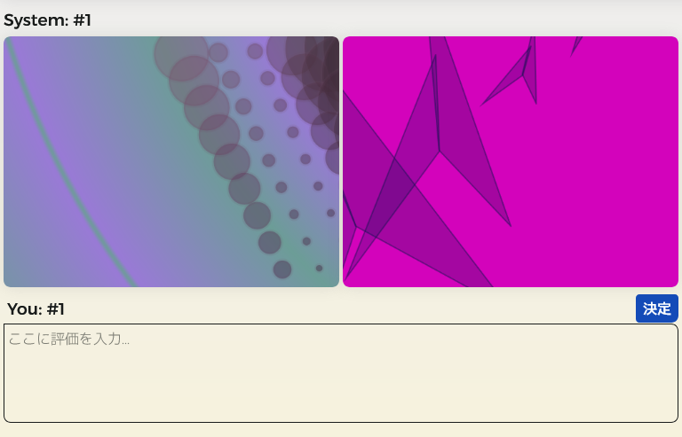
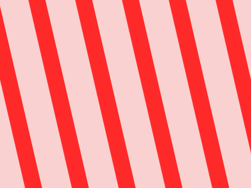
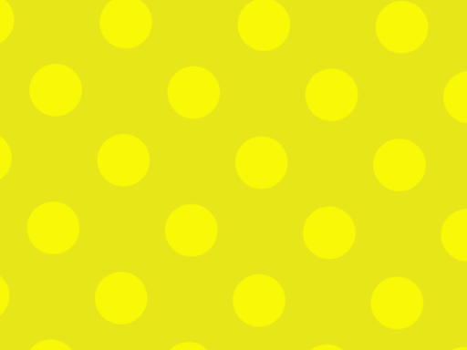
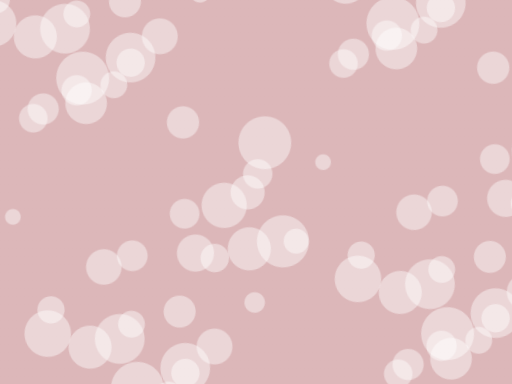
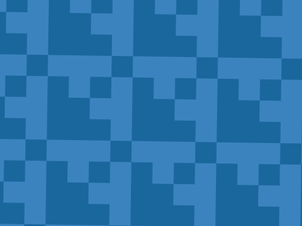
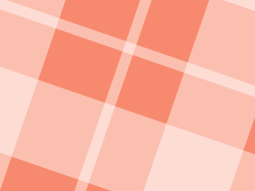
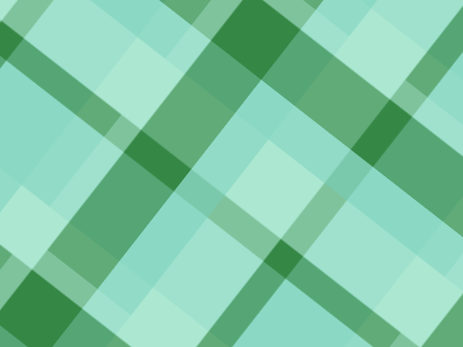
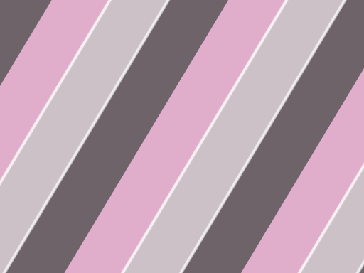
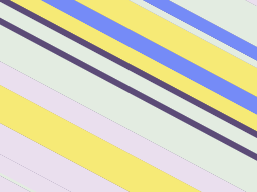

必要なファイルを読み込んでいます...
使い方
- 最初のイメージ入力： 最初の画面にイメージを入力する欄があります。あなたが欲しい画像の雰囲気（色や柄など）をテキストで入力して生成を開始します。
- 2枚の画像が出現します。
-
出現した画像の下にテキストエリアがありますので、次世代に求めるものを入力してください。
- 文章は読点や改行、()で区切られます。
- 1文に趣旨は1つまでにすると、混乱を招きにくくなります。そのため、「だけど」「しかし」などは避け、別の文にすることを推奨します。
- 平易な語彙を使うと、文章を汲み取ってもらえやすくなります。
- 出力に言及。例：「右が好き」「左は嫌い」など。
- 好き嫌い。例：「クールで好き」「ちかちかするのは嫌」など。
- 欲しいポイント。例：「もっとさわやかな感じが良い」など。
- 色・図形の指定。例：「青くして」「赤と白にして」「丸にして」「三角と四角を使って」など。
※ワンポイントアドバイス：色を指定する際は、「黄色」よりも「黄にして」「黄と黒」のようにシンプルに入力した方が、意図がより正確に反映されやすくなります。 - 柄・質感の指定。例：「ストライプ柄にして」「チェック柄にして」「ドット柄にして」「ふわふわにして」「ネオンっぽくして」など。
- 便利な機能の活用：
・画像のズーム・回転： 画像はアップ（拡大）して細部を確認できます。また、「Shiftキー」を押しながら操作することで、画像を回転させることも可能です。
・固定（ロック）ボタン： 画像の横にあるボタンを押すと、気に入った「色」「形」「柄」を固定したまま次世代を生成できます。
・全個体表示： 「全20個体を表示」ボタンを押すと、裏で生成された他のデザインを確認でき、ドラッグ＆ドロップで別の親として指名することも可能です。 - 入力や固定の設定が完了したら、右の「決定」ボタンをクリックしてください。
- 初期状態で入力欄に何も入力せずに「この内容で生成」ボタンを押すと、ランダムな画像が生成・表示されます。
- しばらく待つと、次世代の画像と新しい入力欄が出現します。この流れを何回か繰り返してみましょう。

入力について
入力例
柄（模様）の種類について
以下の柄の名前を評価文に入力することで、デザインに反映させることができます。

ストライプ
ウィンドウペーン

ドット

シャワードット
ギンガム
チェック

ハウンドトゥース
（千鳥格子）
アーガイル

タータン
チェック

マドラス
チェック
クラスター
ストライプ

クラブ
ストライプ

マルチ
ストライプ
この画面は、右上の「使い方」ボタンでいつでも切り替えることができます。

おまけ機能
- 「テーマ」：ライトテーマとダークテーマを切り替えることができます。
最終更新：2024 Dec.8